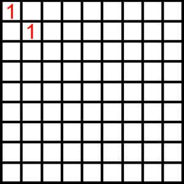

Another Sequence of Sequences
Another Sequence of Sequences
Build a triangle of numbers in the following way: start with $1$ in the top-left, and copy it down to begin a "diagonal column." Each new box is filled by adding its top and right-hand neighbours. Whenever a row finishes, the final value is rewritten one step further down the diagonal column, and the process repeats.

The numbers that appear in the first row turn out to be
$$1,\ 2,\ 5,\ 15,\ 52,\ 203,\ 877,\ 4140,\ \ldots$$
Define
$$f(x) = x + \frac{2 x^{2}}{2!} + \frac{5 x^{3}}{3!} + \frac{15 x^{4}}{4!} + \frac{52 x^{5}}{5!} + \frac{203 x^{6}}{6!} + \cdots$$
What is $|f(\pi i)|$?
Solution
The construction is the Bell triangle, and the first-row sequence $1, 2, 5, 15, 52, 203, 877, 4140, \ldots$ is the sequence of Bell numbers $B_n$ for $n \geq 1$. The exponential generating function of the Bell numbers is $\sum_{n \geq 0} \frac{B_n}{n!} x^n = e^{e^x - 1}$.
Since $f(x)$ omits the constant term $B_0 = 1$, we get
$$f(x) = e^{e^{x} - 1} - 1.$$
Substituting $x = \pi i$ and using $e^{\pi i} = -1$:
$$f(\pi i) = e^{e^{\pi i} - 1} - 1 = e^{-2} - 1.$$
This is real and negative, so $|f(\pi i)| = 1 - e^{-2} \approx 0.8647$.
Answer: $0.8647$
Notes
—